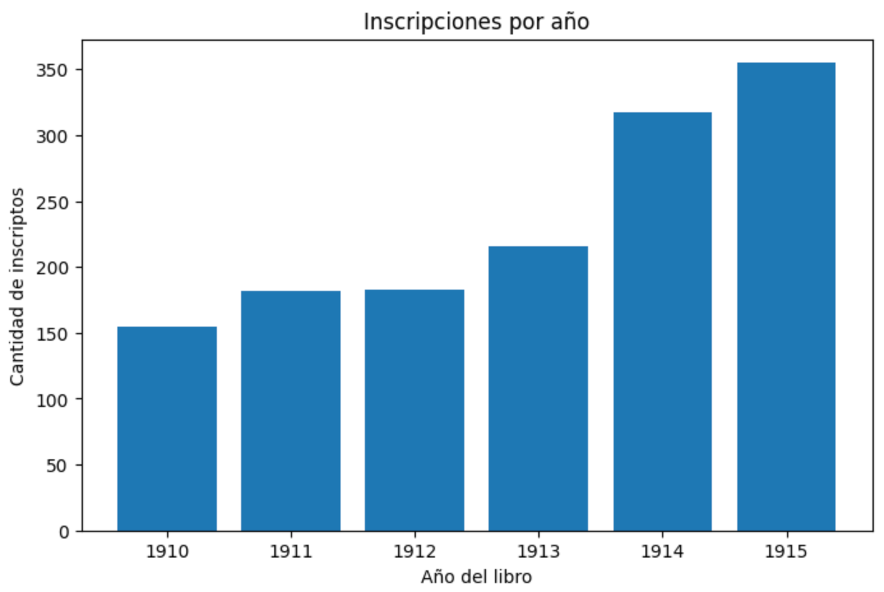
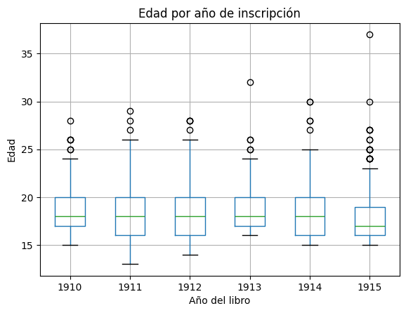
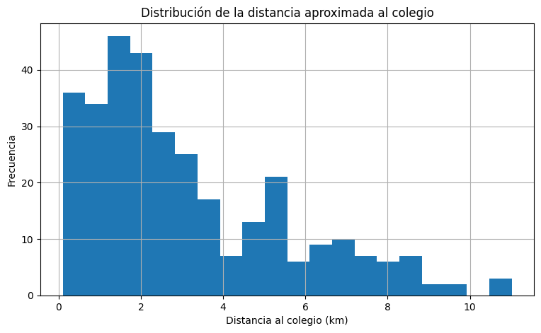
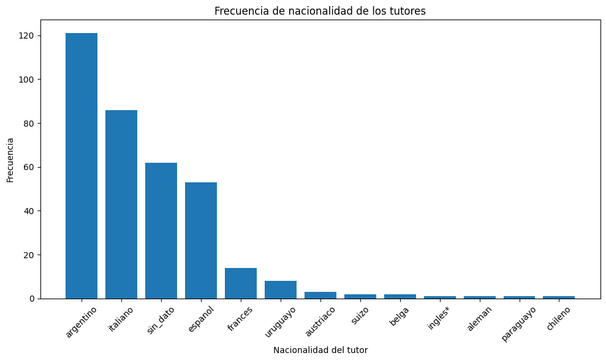
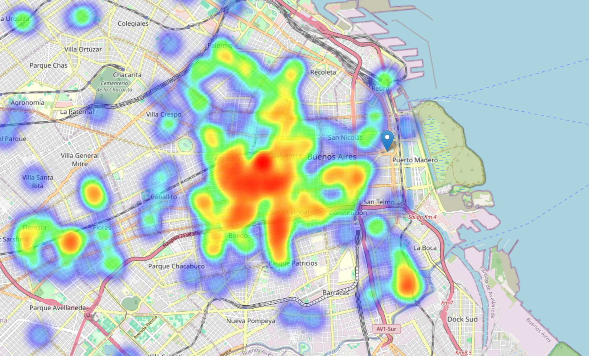

Annual enrollment growth
The dataset grows from 155 records in 1910 to 355 in 1915, with the strongest increase after 1913.

Portfolio Project · Educational Analytics · Python
A portfolio project based on historical school enrollment notebooks, with aggregate quantitative and geospatial outputs.
Overview
Historical institutional spreadsheets usually require cleaning, normalization and careful interpretation before producing analytical outputs.
The project reorganizes selected notebook outputs into a public-facing report with aggregate charts, summary tables and reusable Python modules.
Quantitative Analysis
The dataset grows from 155 records in 1910 to 355 in 1915, with the strongest increase after 1913.

Age ranges are grouped into 13, 14–15, 16–17, 18–24 and 25+ bands.

The boxplot shows medians, dispersion and outlier values across the 1910–1915 period.

This chart disaggregates age ranges by entry course and registry year.

The course-level matrix shows that growth is concentrated in lower entry courses.
| Year | 1º Año | 2º Año | 3º Año | 4º Año | 5º Año | 6º Año |
|---|---|---|---|---|---|---|
| 1910 | 44 | 22 | 21 | 12 | 35 | 21 |
| 1911 | 46 | 24 | 15 | 22 | 32 | 21 |
| 1912 | 67 | 30 | 21 | 14 | 38 | 13 |
| 1913 | 69 | 43 | 24 | 17 | 53 | 10 |
| 1914 | 126 | 45 | 45 | 19 | 66 | 15 |
| 1915 | 139 | 78 | 45 | 40 | 38 | 15 |
Geospatial Analysis
The approximate mean distance is 3.12 km and the median distance is 2.34 km.

The most frequent categories are Argentine, Italian, missing/undetermined, Spanish and French.

The density heatmap summarizes spatial concentration patterns for public presentation.

This map adds the point-based historical view from the geospatial notebook. Since the dataset corresponds to 1910–1915, it is used as a historical geography visualization alongside the density heatmap.

Repository
The repository includes sanitized notebooks, reusable Python modules, documentation, figures and this static portfolio page.